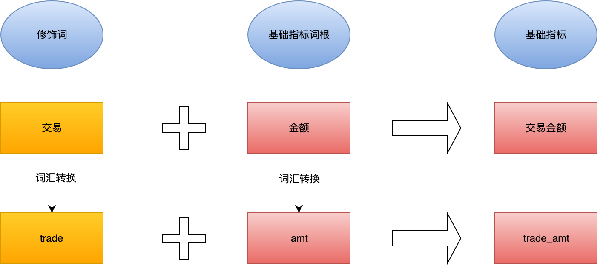
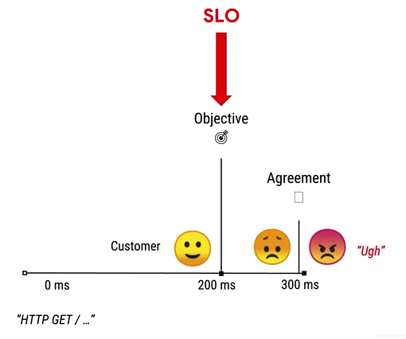

OneData
参考阿里巴巴美团的OneData方法论
背景
由于前期缺少规划，随着集团业务发展，暴露的问题越来越多，给数据治理工作带来了很大的挑战，在数据仓库建设过程中，主要发现了以下几个问题：
- 缺乏统一的标准，如：
开发规范、指标口径等。 - 缺乏统一数据质量监控，如：字段数据不完整和不准确，数据发散等。
- 业务知识体系混乱，导致数据开发人员开发成本增加。
- 数据架构不合理，层级之间分工不明显，数据流向混乱。
- 缺失统一维度和指标管理。
目标
在现有大数据平台的基础上，借鉴业界成熟OneData方法论，构建合理的数据体系架构、数据规范、模型标准和开发模式，以保障数据快速支撑不断变化的业务并驱动业务的发展，最终形成我们自己的OneData理论体系与实践体系。
（借鉴不照搬，别人的不一定适合自己，要适当根据现状灵活修改）
OneData实施流程
首先，由运营提了一个数据指标比如是爆款率，我们以爆款率为例先说一下OneData每个步骤实施的流程和涉及的角色。
第一步：要确定指标的业务口径
业务口径应该由数据中台的产品经理主导，找到提出该指标的运营负责人沟通。首先要问清楚指标是怎么定义的，比如运营说爆款率的定义：分子是专场中商品销售件数超过20件的商品数，分母是专场内的总商品数。
这里面有几个坑（明确指标的具体定义）：
- 这个20件可能是运营拍脑袋定义的数据，这时要协调我们的数据数据分析师看下历史专场销售件数的分布找出最合理的值，然后和运营基于数据再一起定义最终的阈值。如果历史数据专场销售件数大部分都远远超过20件那么这个指标就所有的专场都是爆款专场，就没什么意义了。
- 商品的销售件数超过20件，其中有一个十分有争议的字眼那就是销售，怎么定义销售？是下单就算，还是支付才算？考虑不考虑退款？如果考虑退款是发起退款就算还是退款实际发生后再算？其实是有很多问题要考虑的。最终和运营确定为该专场支付后的商品件数除以专场商品的总件数。
- 销售的商品件数是按商品销售的件数还是按照商品下SKU的销售件数，这个是要搞清楚的，可能运营不关心这个事，但是影响到模型的设计。
商品sku是库存保有单位的意思，库存保有单位（StockkeepingUnit或者SKU）是对每一个产品和服务的唯一标示符，该系统的使用SKU的植根于数据管理，使公司能够跟踪系统，如仓库和零售商店或产品的库存情况。他们往往在分配和商人的水平上连载。
- 处理完这些坑后关于指标的定义还需要问这几个问题。我们统计的维度是什么？比如爆款率的计算维度是专场内商品的维度，一个是要专场内，一个是商品，原子指标就是销售款数。还有就是统计周期，一般统计周期分为按小时、按天（当天）、按业务周（运营自己定义的统计周期）、按自然周周、按自然月月、按年，还有就是截止到昨天也是比较常用。爆款率的统计周期是统计专场开始到结束时间内的销售件数。
- 维度：某某专场，商品，时间区间
- 指标：销售件数(下单?付款?退货申请?退款?) >= 阈值(数据分析得出)
考虑指标的意义：每个指标从提出到实现需要经过一大长过程，花费大量时间精力成本，我们投入这么多资源，能够给公司带来什么，要么直接和交易额相关，要么就是能节省运营同事大量的工作时间，节省人力成本也是为公司省钱嘛。
- 怎么分出指标的重要性？跟业务有关，能直接或间接促进公司盈利的指标都是重要的。（爆款率是给商品负责人看的，专场的商品是由商品运营人员组的，爆款率就决定这个运营人员的组货能力，组货能力强的商品运营一定是能够给公司带来更多的交易额。）
- 另外一个判断重要性的方法是判断
虚荣指标和非虚荣指标- 虚荣指标：常见的PV、UV、月活、总用户数、总商品数等等都是虚荣指标，因为他无法直接促进交易额的增长。uv、月活再多有什么用，用户就是不购买。
- 非虚荣指标：电商行业的主路径的专户率，访问-商品列表、商品列表-商品详情、商品详情-加购、加购-下单转化率这些都是降低流失就能提高交易额的。还有用户的次日留存、7日留存率（新用户7日后是否再次访问）、30日留存率等能直接反应用户的质量和运营做的好坏。商品的动销率（销售款数/上架款数），能直接反映这批商品的好坏。
第二步：要确定指标的技术口径
技术口径是由建模工程师主导，此时数据中台产品经理要和模型设计师沟通整个指标的业务逻辑，另外就是要协调业务方的技术开发人员和我们的建模工程师一起梳理数据库层面需要用到表结构和字段。
- 一定要精确到字段级别，比如我们的爆款率涉及到专场表、商品表、订单表、涉及的字段有商品的销售款数（需要关联专场和商品表）、专场的总商品件数等字段。
这些字段都确定好后，就能初步定下来这个指标能不能统计，如果不能统计这时产品经理应该主动协调运营告知，并且还要告诉运营同事做了哪些功能才能统计这些指标，接下来就是协调业务方产品经理讨论是不是要做这些功能。
第三步：原型设计和评审
此时由数据中台产品经理主导设计原型，对于爆款率来说我们要一方面要展示他们的实时销售件数，另外一方面要实时展示爆款率的变化趋势，加上专场的转化率（支付人数/UV）就可以综合判断这个专场的质量，当运营人员发现转化率和爆款率比较低时再结合商品的数据及时把一些表现比较差劲的商品下架，让销量好的商品得到更多的曝光机会。
评审要拉上我们的架构师、建模工程师、数据开发工程师、后端开发工程师、前端开发工程师、UI，一起说明整个功能的价值和详细的操作流程，确保大家理解的一致。接下来就要和我们的运营根据原型最终确定问题。比较重要的功能要发邮件让我们的运营进一步确认，并同步给所有的运营同事保证大家的口径一致。
第四步：模型设计
此时主导的是我们的模型设计工程师，按照阿里的OneData建模理论的指导，模型设计工程师会采用三层建模的方式把数据更加科学的组织存储。分为ODS(操作数据层)，DWD(明细数据层)、DWS(汇总数据层)、ADS(应用数据层)，这是业务对数据分层常用的模型。模型设计工程师要清楚的知道数据来源自那里，要怎么存放。
第五步：数据开发
此时主导的是大数据开发工程师，首先要和数据建模工程师沟通好技术口径明确好我们计算的指标都来自于那些业务系统，他们通过数据同步的工具如DataX、消息中间TimeTunnel将数据同步到模型工程师设计的ODS层，然后就是一层一层的通过SQL计算到DW*层，一层一层的汇总，最后形成可为应用直接服务的数据填充到ADS层。
另外大数据开发工程另外一个比较重要的工作就是设置调度任务，简单来讲就是什么时候计算提前写好的计算脚本如T-1每天凌晨处理上一天的数据，随着业务的增长，运营会对实时数据的需求越来越大，还有一些实时计算任务的配置也是由大数据开发工程师完成。
第六步：后端开发
此时由后端开发主导，后端开发工程师基于产品经理的功能定义输出相应的接口给前端开发工程师调用，由于ADS层是由数据开发工程师已经将数据注入常规的关系型数据库（如MYSQL等），此时后端开发工程师更多的是和产品经理沟通产品的功能、性能方面的问题，以便给使用者更好的用户体验。
第七步：前端开发
此时主导的是前端开发工程师。原型出来后产品经理会让UI设计师基于产品功能的重点设计UI，UI设计师经过反复的设计，UI最终定型后，会给我们的前端开发工程师提供切图。前端开发工程师基于UI的切图做前端页面的开发。
第八步：联调
此时数据开发工程师、前端开发工程师、后端开发工程师都要参与进来。此时会要求大数据开发工程师基于历史的数据执行计算任务，数据开发工程师承担数据准确性的校验。前后端解决用户操作的相关BUG保证不出现低级的问题完成自测。
第九步：测试
测试工程师在完成原型评审后就要开始写测试用例，哪些是开发人员自己要自测通过才能交上来测试的，哪些是自己要再次验证的都在测试用例写清楚。此时有经验的产品经理会向运营人员要历史的统计数据来核对数据，不过运营人员的数据不一定准确，只是拿来参考。最终测试没问题产品经理协调运营人员试用，试用中发现的一些问题再回炉重新修改，此时整个研发过程就结束了。
第十步：上线
运维工程师会配合我们的前后端开发工程师更新最新的版本到服务器。此时产品经理要找到该指标的负责人长期跟进指标的准确性。重要的指标还要每过一个周期内部再次验证，从而保证数据的准确性。运维工程师会配合我们的前后端开发工程师更新最新的版本到服务器。此时产品经理要找到该指标的负责人长期跟进指标的准确性。重要的指标还要每过一个周期内部再次验证，从而保证数据的准确性。
基于阿里OneData的数据指标管理体系
完成上面这些步骤最核心的数据指标的定义与数据模型的建立。数据指标的定义和数据口径的统一和数据模型的准确性科学性是直接决定产品的质量和说服力。
数据指标的定义
采用阿里的一套针对指标的规范定义，让大家在一个标准下看数据消除歧义。
-
数据域：面向业务的大模块，不会经常变。比如我们公司有环贸快版打版服务、亿订电商业务、供应链业务等等大的业务模块类似产品线。
-
业务过程：如电商业务中的下单、支付、退款等都属于业务过程。
-
时间周期：就是统计范围，如近30天、自然周、截止到当天等。
-
修饰类型：比较好理解的如电商中支付方式，终端类型等。
-
修饰词：除了维度意外的限定词，如电商支付中的微信支付、支付宝支付、网银支付等。终端类型为安卓、IOS等
-
原子指标：不可再拆分的指标如支付金额、支付件数等指标
-
维度：常见的维度有地理维度（国家、地区等）、时间维度（年、月、周、日等）
-
维度属性：如地理维度中的国家名称、ID、省份名称等。
-
派生指标：原子指标+修饰词+时间周期就组成了一个派生指标。
阿里就是用这一套严格的指标拆分体系来管理每个指标。之所以拆这么彻底，就是要消除歧义。条件允许的话可以协调开发同事、测试同事、产品同事口述一下对这个指标的理解看看有什么不同。最大程度的消除指标的歧义。
基于阿里OneData的模型设计体系
既然要做数据处理，我们数据前后肯定有变化，那么为了保险，我们需要将各个维度的数据分层储存，比如一个订单数据，让我罗列我可以整出二、三十个字段，可是最后我们真正用到的只有：uid、time和goods id，这个过程需要不断的过滤。每过滤一层就需要在新的一层储存一次。业务是分层的参考标准，不同的业务，分层不一样，比如阿里的数据分层分为：ODS、DWD、DWS、ADS。
- ODS(操作数据层)：是数据仓库第一层数据，直接从原始数据过来的，经过简单地处理，爆款率涉及到的表结构比如订单表、专场表、商品表、用户表等。
- DW*(汇总数据层)：这个是数据仓库的第二层数据，DWD和DWS很多情况下是并列存在的，这一层储存经过处理后的标准数据。增加了维度形成了统计宽表，比如专场的爆款商品有哪些。
- ADS(应用数据层)：这个是数据仓库的最后一层数据，为应用层数据，直接可以给业务人员使用。比如某日某个专场爆款率是多少、总的爆款率是什么。
数据看板的设计
- 到现在为止指标已经定义好了，也采用三层建模的形式存储了下来。在这里就跳过数据开发这块，太过于偏技术化。指标计算好后最重要的就是指标的展示了，此时有个坑，你会发现每个人关注的数据不太一样，老板关注的和部门领导关注的是有差别的、部门领导关注的和一线的执行人员关注的还是有差别的，我们做了很多看板还是无法满足住全公司每个用户的数据看板需求。
- 最后决定采用自定义看板的方案，我们数据中台提供的是看板库，所有的指标已经在数据中台分门别类的定义好，计算好。
- 如果遇到新的数据指标，现在的看板库无法满足，数据中台会进行新一轮的开发，开发完成后将指标计算的结果放到看板库中。看数据的同事可以通过查看、搜素自己想要的指标，通过拖拉拽的方式形成自己的个性化看板，并能通过微信、小程序形成自己的每日看板报告。
- 这样老板想看的指标数据中台自己定制页面，定制看板的权限交给每个同事，不过要注意权限的设定，有些同事是不能看到特别关键的指标。
- 看数据人员选择自己想要的指标通过拖拉的方式定制自己的看板，可以选择显示方式如折线图、饼图、柱状图等常规图表，也可以选择统计周期等属性。
总结
OneModel 统一数据构建和管理
将指标定位细化为：原子指标、时间周期、修饰词（统计粒度、业务限定, etc），通过这些定义，设计出各类派生指标; 基于数据分层，设计出维度表、明细事实表、汇总事实表。
OneService 统一数据服务
基于复用而不是复制数据的思想，能力包括：
- 利用主题逻辑表屏蔽复杂物理表的主题式数据服务
- 一般查询 + OLAP 分析+在线服务的统一且多样化数据服务
- 屏蔽多种异构数据源的跨源数据服务
OneID 统一数据萃取
(这几个不是太懂)
基于统一的实体识别、连接和标签生产，实现数据通融，包括：
- ID自动化识别与连接
- 行为元素和行为规则
- 标签生产
美团的创新点
统一业务归口
数据来源于业务并支撑着业务的发展。因此，数仓建设的基石就是对于业务的把控，数仓建设者即是技术专家，也应该是“大半个”业务专家。基于互联网行业的特点，我们基本上采用需求推动数据的建设（从上到下，维度建模），这也带来了一些问题，包括：数据对业务存在一定的滞后性；业务知识沉淀在各个需求里，导致业务知识体系分散。针对这些问题，我们提出统一业务归口，构建全局知识库，进而保障对业务认知的一致性。

设计统一归口
为了解决数据仓库建设过程中出现的各种痛点，我们从模型与规范两个方面进行建设，并提出设计统一归口。
- 模型
规范化模型分层、数据流向和主题划分，从而降低研发成本，增强指标复用性，并提高业务的支撑能力。
-
模型分层
优秀可靠的数仓体系，往往需要清晰的数据分层结构，即要保证数据层的稳定又要屏蔽对下游的影响，并且要避免链路过长。结合这些原则及以往的工作经验，我们将分层进行统一定义为四层：
-
模型数据流向
重构前，存在大量的烟囱式开发、分层应引用不规范性及数据链路混乱、血缘关系很难追溯和
SLA时效难保障等问题。重构之后，稳定业务按照标准的数据流向进行开发，即
ODS–>DWD–>DWA–>APP。非稳定业务或探索性需求，可以遵循ODS->DWD->APP或者ODS->DWD->DWT->APP两个模型数据流。在保障了数据链路的合理性之后，又在此基础上确认了模型分层引用原则：- 正常流向：
ODS->DWD->DWT->DWA->APP，当出现ODS->DWD->DWA->APP这种关系时，明主题域未覆盖全。应将DWD数据落到DWT中，对于使用频度非常低的表允许DWD->DWA。 - 尽量避免出现
DWA宽表中使用DWD又使用（该DWD所归属主题域）DWT的表。 - 同一主题域内对于DWT生成DWT的表，原则上要尽量避免，否则会影响ETL的效率。
DWT、DWA和APP中禁止直接使用ODS的表，ODS的表只能被DWD引用。- 禁止出现反向依赖，例如
DWT的表依赖DWA的表。
- 正常流向：
- 主题划分
传统行业如银行、制造业、电信、零售等行业中，都有比较成熟的主题划分，如BDWM、FS-LDM、MLDM等等。但从实际调研情况来看，主题划分太抽象会造成对业务理解和开发成本较高，不适用互联网行业。因此，结合各层的特性，我们提出了两类主题的划分：面向业务、面向分析。
- 面向业务：按照业务进行聚焦，降低对业务理解的难度，并能解耦复杂的业务。我们将实体关系模型进行变种处理为实体与业务过程模型。实体定义为业务过程的参与体；业务过程定义是由多个实体作用的结果，实体与业务过程都带有自己特有的属性。根据业务的聚合性，我们把业务进行拆分，形成了七大核心主题。
- 面向分析：按照分析聚焦，提升数据易用性，提高数据的共享与一致性。按照分析主体对象不同及分析特征，形成分析域主题在DWA进行应用，例如销售分析域、组织分析域。
- 规范
模型是整个数仓建设基石，规范是数仓建设的保障。为了避免出现指标重复建设和数据质量差的情况，我们统一按照最详细、可落地的方法进行规范建设。
-
词根：词根是维度和指标管理的基础，划分为普通词根与专有词根，提高词根的易用性和关联性。- 普通词根：描述事物的最小单元体，如：交易-
trade - 专有词根：具备约定成俗或行业专属的描述体，如：美元-
USD
- 普通词根：描述事物的最小单元体，如：交易-
-
表命名规范-
通用规范
- 表名、字段名采用一个下划线分隔词根（示例：clienttype->client_type）。
- 每部分使用小写英文单词，属于通用字段的必须满足通用字段信息的定义。
- 表名、字段名需以字母为开头。
- 表名、字段名最长不超过64个英文字符。
- 优先使用词根中已有关键字（数仓标准配置中的词根管理），定期Review新增命名的不合理性。
- 在表名自定义部分禁止采用非标准的缩写。
-
表命名规则
表名称 = 类型 + 业务主题 + 子主题 + 表含义 + 存储格式 + 更新频率 + 结尾
-
-
指标命名规范：结合指标的特性以及词根管理规范，将指标进行结构化处理。-
基础指标词根，即所有指标必须包含以下基础词根：
基础指标词根 英文全称 Hive数据类型 MySQL数据类型 长度 精度 词根 样例 数量 count Bigint Bigint 10 0 cnt 金额类 amout Decimal Decimal 20 4 amt 比率/占比 ratio Decimal Decimal 10 4 ratio 0.9818 …… …… …… …… …… -
业务修饰词，用于描述业务场景的词汇，例如
trade-交易。 -
日期修饰词，用于修饰业务发生的时间区间。
日期类型 全称 词根 备注 日 daily d 周 weekly w …… …… …… -
聚合修饰词，对结果进行聚集操作。
聚合类型 全称 词根 备注 平均 average avg 周累计 wtd wtd 本周一截止到当天累计 …… …… …… -
基础指标，单一的业务修饰词+基础指标词根构建基础指标 ，例如：交易金额-
trade_amt。 -
派生指标，多修饰词+基础指标词根构建派生指标。派生指标继承基础指标的特性，例如：安装门店数量-
install_poi_cnt。 -
普通指标命名规范，与字段命名规范一致，由词汇转换即可以。

-
日期类型指标命名规范，命名时要遵循：业务修饰词+基础指标词根+日期修饰词/聚合修饰词。将日期后缀加到名称后面，如下图所示：
-
聚合类型指标，命名时要遵循：业务修饰词+基础指标词根+聚合类型+日期修饰词。将累积标记加到名称后面，如下图所示：
-
-
清洗规范：确认了字段命名和指标命名之后，根据指标与字段的部分特性，我们整理出了整个数仓可预知的24条清洗规范：数据类型 数据类别 Hive类型 MySQL类型 长度 精度 词根 格式说明 备注 日期类型 字符日期类 string varchar 10 date YYYY-MM-DD 日期清洗为相应的格式 数据类型 数量类 bigint bigint 10 0 cnt 活跃门店数量 …… …… …… …… …… …… …… …… 结合模型与规范，形成模型设计及模型评审两者的工作职责，如下图所示：
统一应用归口
从图中可以看出，重构前一个应用存在多次迭代，每次迭代都各自维护自己的文档。烟囱式开发会导致业务信息混乱、应用无法与文档对齐、知识传递成本、维护成本和迭代成本大大增加等问题。重构后，应用与知识库相对应，保证一个应用只对应一份文档，且应用统一要求在一份文档上进行迭代，从根源上改变应用支持流程。同时，针对核心业务细节和所支撑的数据信息，进行了全局调研并归纳到知识库。综合统一的知识库，降低了知识传递、理解、维护和迭代成本。
统一归口策略包含业务归口统一、设计归口统一和应用归口统一，从底层保证了数仓建设的三特性和三效果。
统一数据出口
数仓建设不仅仅是为了数据内容而建设，同时也为了提高交付的数据质量与数据使用的便利性。如何保证数据质量以及推广数据的使用，我们提出了统一数据出口策略。在进行数据资产管理和统一数据出口之前，必须高质量地保障输出的数据质量，从而树立
OneDatas数据服务体系的权威性。
-
交付标准化
如何保证数据质量，满足什么样的数据才是可交付的，是数据建设者一直探索的问题。为了保证交付的严谨性，在具体化测试方案之前，我们结合数仓的特点明确了数据交付标准的五个特性，如下图所示：
《交付标准化》完善了整个交付细节，从根本上保证了数据的质量，如：业务测试保障数据的合理性、一致性；技术测试保障数据的唯一性、准确性；数据平台的稳定性和后期人工维护保障数据的及时性。
-
数据资产管理
针对如何解决数据质量中维度与指标一致性以及如何提高数据易用性的问题，我们提出数据资产的概念，借助公司内部平台工具“起源数据平台”实现了整个数据资产管理，它的功能如下图所示：
借用起源数据平台，我们实现了：
- 统一指标管理，保证了指标定义、计算口径、数据来源的一致性。
- 统一维度管理，保证了维度定义、维度值的一致性。
- 统一数据出口，实现了维度和指标元数据信息的唯一出口，维值和指标数据的唯一出口。
通过交付标准化和数据资产管理，保证了数据质量与数据的易用性，同时我们也构建出OneData数据体系中数据指标管理的核心。
实践的成果
流程改善
我们对开发过程进行梳理，服务于整个OneData体系。对需求分析、指标管理、模型设计、数据验证进行了改善，并结合OneData模型策略，改善了数仓管理流程。
数仓全景图
基于OneData主题建设，我们采用面向业务、面向分析的建设策略，形成数仓全景图，如下图所示：
资产管理列表
基于起源数据平台形成的资产管理体系，如下图所示：
总结和展望
我们结合了OneData核心思想与特点，构建一种稳定、可靠的基础数据仓库，从底层保障了数据质量，同时完成OneData实践，形成自有的OneData理论体系。未来，我们还将在技术上引入实时数据仓库，满足灵活多样、低延时的数据需求；在业务层面会横向拓展其他业务领域，不间断地支撑核心业务的决策与分析。下一步，我们将为企业级One Entity数据中台（以Data As a Service为理念），提供强有力的数据支撑。在后续数仓维护过程中，不断地发现问题、解决问题和总结问题，保障数据稳定性、一致性和有效性，为核心业务构建价值链，最终形成企业级的数据资产。
补充：Google SRE：服务质量
- SLI（Service Level Indicator）该服务的某项服务质量的一个具体量化指标，用于测量性能。是随时间变化的度量值，比如请求的延迟，每秒请求的吞吐量，或者每种请求的失败次数。这些值通常会随时间累积，然后被转换为一个比率，平均值或者相对某个阈值的百分比。
- SLO（Service Level Objective）相关方一致同意的贯穿一个时间窗口（比如过去30天或者这个季度）内SLI累积成功数的目标

- SLA（Service Level Agreement）该服务与用户之间的一个明确的、或不明确的协议，描述了在达到或没有达到SLO的后果。如果SLO没有达到时，会有什么后果？如果没有定义明确的后果，那么我们就肯定在讨论一个SLO而不是SLA。
例子：如果服务在一个日历月内未达到
99.95%可用性，则该服务提供商每分钟都会因不合规而补偿客户。 - RPO（Recovery Point Object）衡量系统在灾难发生后将损失多少数据的指标。
- RTO（Recovery Time Object）它是指灾难发生后，从 IT 系统当机导致业务停顿之时开始，到 IT 系统恢复至可以支持各部门运作、恢复运营之时，此两点之间的时间段称为 RTO。
最终总结
- 呼~~~~~~累！！！（终于搞完了，理论的东西，记多了容易犯困，更何况这一篇，写了两个大晚上！）
- 照顾了阅读体验，怕量不够所以
OneDate系列找了一篇阿里的（偏数据经理角度），毕竟是人家提出的方法论。然后再找了美团的实践经验，方法论落地不同公司的实现方式不一样，但是都打通小异。 - 虽然但是，美团的技术博文的行文真的是滴水不漏，无可挑剔。业界楷模，赞！！！
- 这一大篇，自己的理解偏少，毕竟是理论，如果没有实践的部分，还是很少能够理解
Get到点。或者理解的不够深刻，没有那种顿悟（哦，原来这个设计是因为这个原因）的感觉，只能硬啃（嗯，是可以这样设计，没毛病） - 实践真的很重要！！！理论基于实践，高于实践。
2021-04-19补充 Google SRE：服务质量